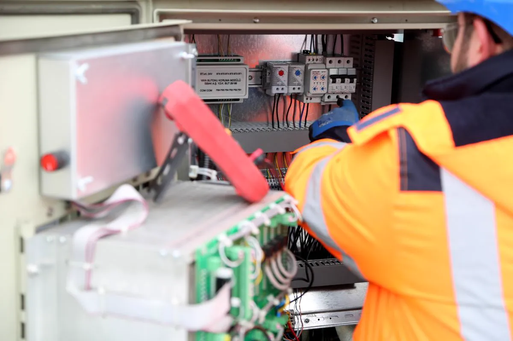

Por que empresas estão instalando pontos de recarga
Para loja, restaurante, hotel e shopping, o ponto de recarga virou motivo de visita: o cliente escolhe onde parar pelo aplicativo que mostra carregadores. Para empresa com estacionamento próprio, é benefício para o colaborador. Para quem tem frota elétrica, é operação: o veículo precisa sair carregado todo dia.
Nos três casos, o problema é o mesmo: vários carregadores somados pesam na entrada de energia, e a infraestrutura precisa ser pensada para crescer por etapas. Para garagem coberta em edificação com projeto de incêndio, a instalação também passa pela adequação NT 23 do Corpo de Bombeiros. Para uma casa ou um ponto isolado, veja instalação de wallbox.
O que a infraestrutura de recarga envolve
Estudo da carga disponível
Quanto a entrada de energia comporta hoje, qual a demanda contratada e em que horário o prédio já está no limite. Desse estudo sai quantos pontos dá para ligar agora, quantos com gerenciamento de carga e quando passa a ser preciso reforçar a alimentação.
Quadro de distribuição dedicado
Os carregadores saem de um quadro próprio, com um circuito e uma proteção por ponto, DPS e espaço reserva para expansão. A montagem do quadro elétrico é feita para que o próximo carregador seja só mais um disjuntor, não uma obra nova.
Passagem de cabos e infraestrutura seca
Eletrocalha, eletroduto aparente ou enterrado até as vagas, caixas de passagem e pontos de espera. Deixar a tubulação pronta para todas as vagas previstas, mesmo instalando poucos carregadores no início, é o que mais economiza nas etapas seguintes.
Carregadores e gerenciamento de carga
Carregadores de corrente alternada atendem a maior parte dos casos de estacionamento, em que o carro fica parado por horas. Com gerenciamento de carga, a potência disponível é dividida entre os carros conectados em vez de somar todos no pico. Carregadores com protocolo aberto permitem escolher depois a plataforma de controle de acesso e cobrança.
Proteções, sinalização e segurança
Proteção diferencial-residual adequada à recarga em cada ponto, conforme a ABNT NBR 17019, aterramento, seccionamento acessível, sinalização das vagas e proteção mecânica do carregador contra batida de veículo. Em garagem fechada, a avaliação de risco de incêndio segue o caminho de combate a incêndio da edificação.

Corrente alternada ou carregador rápido
O carregador rápido em corrente contínua recarrega em minutos, mas exige potência que normalmente só existe com subestação própria ou reforço grande da entrada — faz sentido em rodovia e eletroposto público. Para estacionamento de empresa, loja e frota que pernoita, os carregadores em corrente alternada resolvem com uma fração do custo de infraestrutura. O estudo de carga mostra qual é o seu caso.
Como conduzimos o projeto
Levantamento
Entrada de energia, demanda contratada, quadros existentes, número de vagas e uso previsto dos pontos.
Estudo por etapas
Quantos pontos agora, quantos com gerenciamento de carga e o que muda em cada expansão.
Instalação
Quadro dedicado, cabeamento, infraestrutura das vagas e instalação dos carregadores.
Testes e entrega
Testes das proteções, configuração dos carregadores, sinalização e documentação entregue.

Que solução costuma servir para cada tipo de local
| Local | Uso típico | Solução usual |
|---|---|---|
| Loja, restaurante, supermercado | Cliente fica de 30 min a 2 h | Poucos pontos AC de média potência, vaga sinalizada |
| Empresa com estacionamento de colaboradores | Carro parado o expediente inteiro | Vários pontos AC com gerenciamento de carga |
| Hotel e pousada | Hóspede pernoita | Pontos AC com controle de acesso |
| Frota elétrica | Veículo volta no fim do dia e sai de manhã | Pontos AC por vaga, quadro dimensionado para a frota toda |
| Estacionamento rotativo | Permanência variável | Pontos AC com cobrança por aplicativo |
Perguntas frequentes sobre recarga para empresas
Quantos carregadores a minha empresa consegue instalar?
Depende da potência disponível na entrada de energia e de quanto dela já está em uso. O estudo de carga define quantos pontos cabem hoje e quantos passam a caber com gerenciamento de carga, que divide a potência entre os carros conectados.
Preciso de carregador rápido?
Para estacionamento em que o carro fica parado por horas, normalmente não. Carregadores em corrente alternada atendem esse uso com custo de infraestrutura muito menor. O carregador rápido em corrente contínua costuma exigir subestação ou reforço grande da entrada de energia.
Dá para cobrar pela recarga?
Sim. Carregadores com protocolo de comunicação aberto se integram a plataformas de controle de acesso e cobrança por aplicativo. A escolha do carregador já leva isso em conta.
A instalação em garagem coberta precisa de aprovação do Corpo de Bombeiros?
Em edificação com projeto de segurança contra incêndio, a inclusão de pontos de recarga em garagem pode exigir atualização do projeto conforme a Norma Técnica 23 do CBMES. Isso é avaliado no levantamento.
Vale instalar a tubulação para todas as vagas de uma vez?
Na maioria dos casos, sim. Deixar eletrocalha e eletrodutos prontos até as vagas previstas custa pouco perto de quebrar piso e parede de novo a cada expansão. Os carregadores podem ser instalados por etapa.
Recarga para empresas na Grande Vitória
Estudo e instalação em empresas, lojas, hotéis e estacionamentos da região:
Quer oferecer recarga no seu estacionamento?
Informe o número de vagas e a demanda contratada. Retornamos com o estudo por etapas.